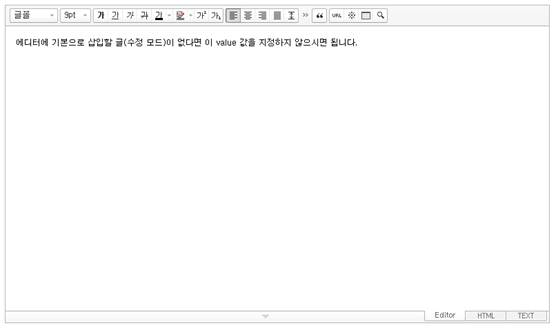

2.0 버전 설치
여기에서는 예제로 pages/write.html 파일에 SmartEditor2을 설치하는 방법을 설명한다("에디터 구조"에서 데모 페이지인 SmartEditor2.html 파일과 같은 역할을 하는 파일이다). SmartEditor Basic 0.3.x 버전이 설치된 상태에서 SmartEditor2 버전으로 업그레이드하려면 "0.3.x 버전에서 업그레이드"를 참고한다.
- 에디터를 삽입할 페이지와 동일한 도메인에 새 폴더를 생성하고, SmartEditor2 배포 파일에서 다음과 같은 파일과 폴더를 복사해 해당 폴더에 붙여 넣는다. 여기에서 생성할 폴더를 se2라고 하자.
/css /img /js smart_editor2_inputarea.html smart_editor2_inputarea_ie8.html SmartEditor2Skin.html - write.html 파일에 다음과 같은 내용을 추가한다. 이때 HuskyEZCreator.js 파일의 경로가 맞는지 주의해야 한다.
<script type="text/javascript" src="../se2/js/service/HuskyEZCreator.js" charset="utf-8"></script> - write.html 파일에서 에디터를 추가할 위치에 다음과 같이 textarea를 추가한다. 사용자가 에디터에서 작성한 내용은 여기에서 추가한 textarea value를 통해 서버로 전송된다. 기존에 작성하여 저장한 글을 수정하는 경우에는 이 textarea value에 수정할 내용을 지정하여, 에디터가 로드되었을 때 에디터 편집 영역에 기존 글이 표시되도록 한다.
<textarea name="ir1" id="ir1" rows="10" cols="100">에디터에 기본으로 삽입할 글(수정 모드)이 없다면 이 value 값을 지정하지 않으시면 됩니다.</textarea> - write.html 파일에 다음과 같이 에디터를 생성하는 코드를 작성한다. 이때 SmartEditor2Skin.html 파일의 경로가 맞는지 주의해야 한다.
<script type="text/javascript"> var oEditors = []; nhn.husky.EZCreator.createInIFrame({ oAppRef: oEditors, elPlaceHolder: "ir1", sSkinURI: "../se2/SmartEditor2Skin.html", fCreator: "createSEditor2" }); </script> - write.html 파일을 저장하고 에디터가 다음 그림처럼 로드되는지 확인한다. 
에디터는 편집 내용을 서버에 전달해 주는 역할만 수행하며, 에디터에서 편집한 내용을 저장하는 작업은 서버 측에서 이루어진다. 에디터는 편집 내용을 전송하기 위해서 먼저 3번 과정에서 추가한 textarea의 value에 편집 내용을 적용한 후에 서버 측 URL에 form을 전송한다.
textarea의 value에 편집 내용을 적용하려면 UPDATE_CONTENTS_FIELD 메시지를 호출해야 한다. 이 부분은 다음 write.html 파일의 코드를 참고한다// ‘저장’ 버튼을 누르는 등 저장을 위한 액션을 했을 때 submitContents가 호출된다고 가정한다. function submitContents(elClickedObj) { // 에디터의 내용이 textarea에 적용된다. oEditors.getById["ir1"].exec("UPDATE_CONTENTS_FIELD", []); // 에디터의 내용에 대한 값 검증은 이곳에서 // document.getElementById("ir1").value를 이용해서 처리한다. try { elClickedObj.form.submit(); } catch(e) {}